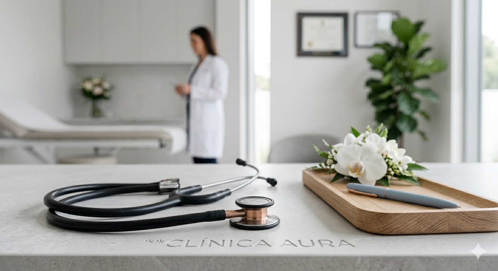
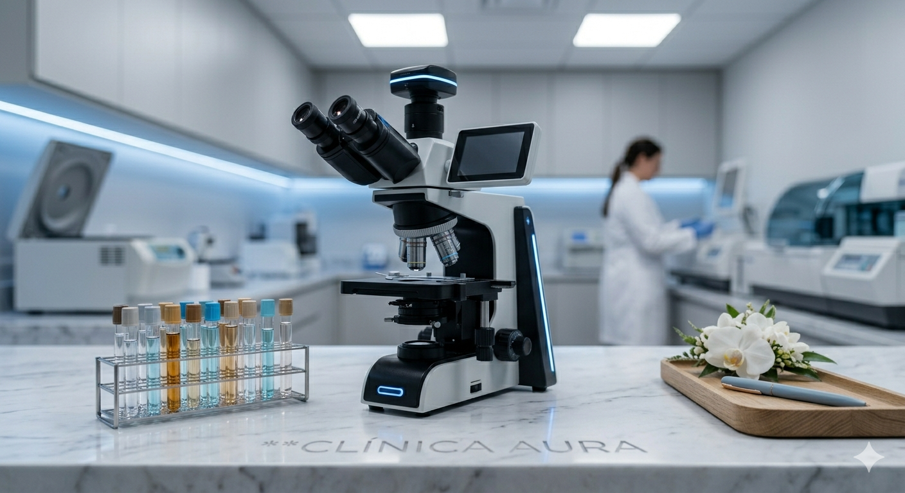
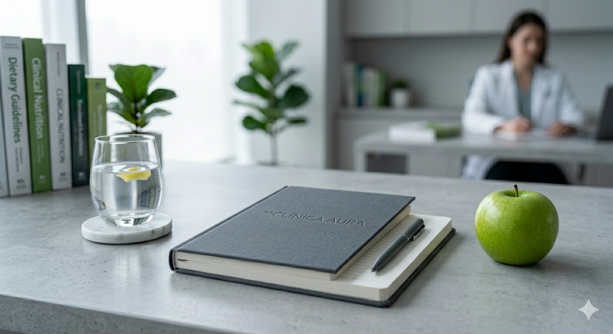
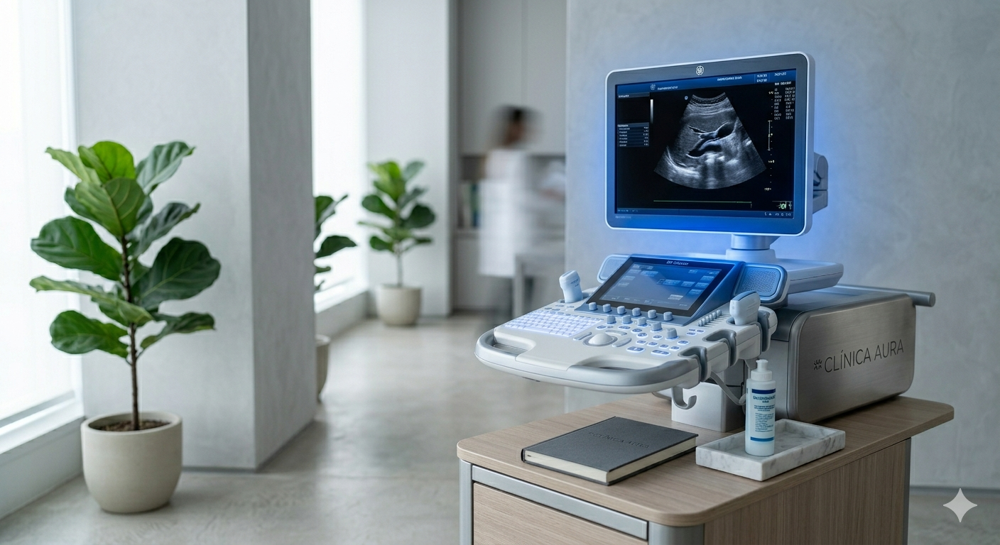

Cuidados Especializados

Atendimento Médico
Consultas em Clínica Geral, Cardiologia e Pediatria com foco no histórico do paciente.

Exames Laboratoriais
Coleta e análise com equipamentos de alta precisão e resultados digitais rápidos.

Aconselhamento Nutricional
Reeducação alimentar e planos específicos para atletas, diabéticos ou bem-estar geral.

Diagnóstico por Imagem
Ultrassonografias e Raio-X realizados por especialistas com tecnologia digital.
Tecnologia a favor da vida
Nossa infraestrutura foi projetada para reduzir o tempo de espera e aumentar a precisão dos diagnósticos. Investimos constantemente na atualização de nossos equipamentos e na capacitação da nossa equipe técnica.
"A modernidade não está apenas nas máquinas, mas no olhar atento de quem cuida."